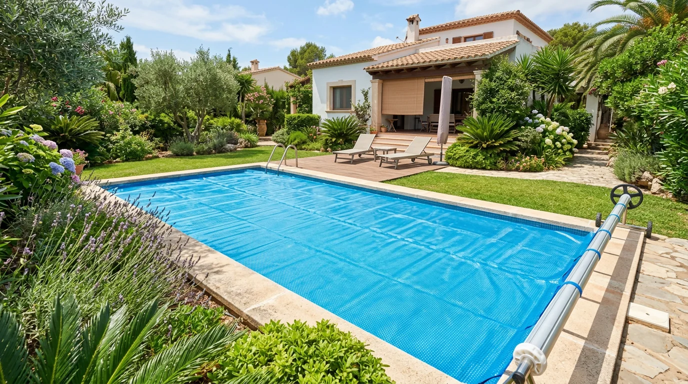

Complemento esencial para cualquier sistema de climatización.

El cobertor térmico (o manta térmica) es un complemento muy recomendable para cualquier piscina climatizada. Colocado sobre la superficie del agua cuando la piscina no se usa, reduce la pérdida de calor por evaporación hasta un 70%, lo que permite mantener la temperatura con menos consumo del sistema de calefacción.
Además, actúa como barrera frente a la suciedad, las hojas y los insectos, manteniendo el agua más limpia y reduciendo el trabajo del filtro y del equipo de depuración. En muchos casos se puede enrollar y desenrollar de forma manual o con sistema motorizado para mayor comodidad.
En Cuesa Sport te asesoramos sobre el tipo de cobertor más adecuado (burbuja, lámina, etc.) según el tamaño de tu piscina y si la combinas con bomba de calor, solar o intercambiador. Es una inversión mínima con grandes resultados en confort y ahorro.
Solicitar presupuestoComplemento ideal para mantener el calor y el agua limpia con mínima inversión y gran ahorro.